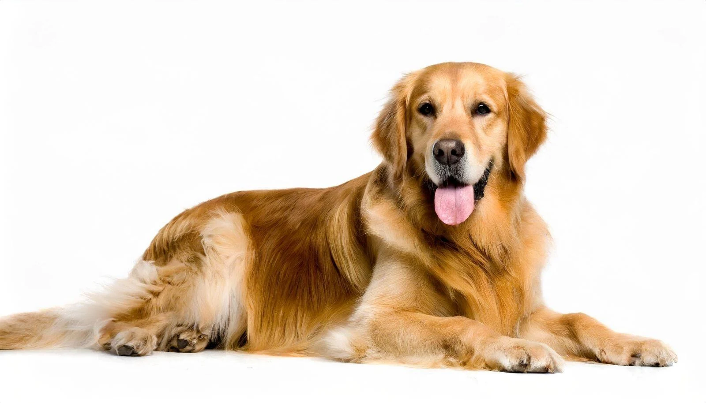

Si të kujdesesh për kafshët
Macet

Ushqimi
- Jep ushqim cilësor për mace (jo ushqim për njerëz)
- Ujë i freskët gjithmonë i disponueshëm
- Kotele → ushqim special për kotele
- Mace të rritura → 2 vakte në ditë
Higjiena
- Mbaje kutinë e rërës të pastër (pastro çdo ditë)
- Ndrysho rërën rregullisht
- Krehja 1–3 herë në javë (më shpesh për mace me qime të gjata)
- Larja bëhet vetëm kur është e nevojshme
Çfarë të shmangësh
- Çokollatë, qepë, hudhër, qumësht
- Dënim fizik
- Zhurma të forta dhe stres
Qentë

Ushqimi
- Jep ushqim cilësor për qen (sipas moshës dhe madhësisë)
- Ujë i freskët gjithmonë
- Këlyshët → 3–4 vakte në ditë
- Qentë e rritur → 2 vakte në ditë
Higjiena
- Larje kur është e nevojshme (jo shumë shpesh)
- Krehje e rregullt (sidomos për qen me qime të gjata)
- Pastrim i dhëmbëve dhe i veshëve
- Shkurto thonjtë rregullisht
Çfarë të shmangësh
- Çokollatë, kocka të vogla, alkool
- Lënien pa ushqim apo ujë
- Neglizhencën dhe izolimin
Lepujt

Ushqimi
- Sanë (bar i thatë) duhet të jetë gjithmonë i disponueshëm
- Perime të freskëta çdo ditë (marule, majdanoz, karrota – me masë)
- Peleta speciale për lepuj (jo shumë)
- Ujë i freskët gjithmonë
Higjiena
- Pastro kafazin rregullisht
- Ndrysho shtrojën shpesh
- Lepujt pastrohen vetë → mos i lani shpesh
- Krehje e lehtë sidomos gjatë ndërrimit të qimes
Çfarë të shmangësh
- Çokollatë, bukë, sheqer
- Kafaz i vogël
- Zhurma të forta dhe stres